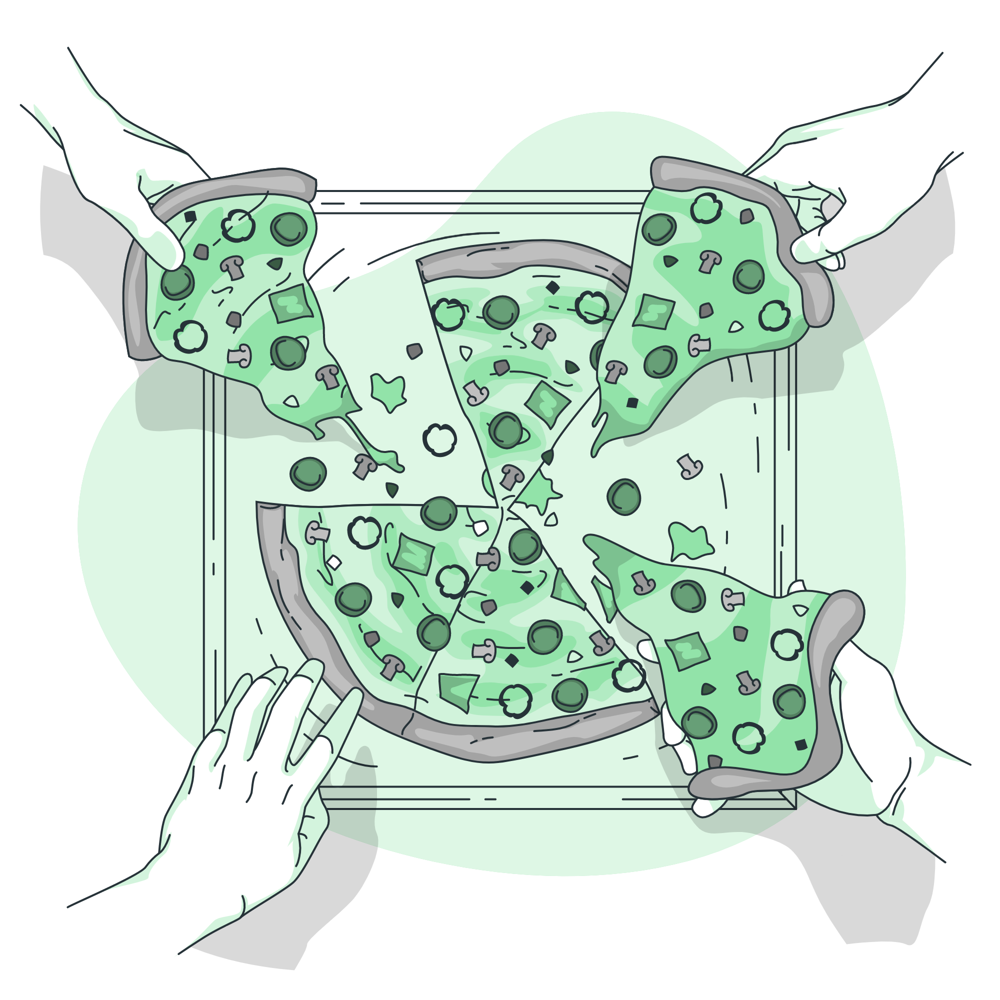

Saúde alimentar trata-se do conjunto de hábitos que formam as escolhas alimentares em que cada pessoa faz
no seu dia a dia, seja no café da manhã, almoço ou jantar. Ter uma alimentação saudável reduz diversos
riscos à vida, como exemplos estão os ataques cardíacos, diabetes, pressão alta, problemas neurológicos
e outras doenças. Além disto, contribui para uma saúde mental e ao realizar uma dieta correta pode
prevenir estresses, ansiedade, insônia e possíveis casos de depressão.
Imagem 1: Família jantando
2. Os benefícios da alimentação saudável
De acordo com a estudo elaborado pelo Ministério da Saúde,
a alimentação saudável proporciona o sentimento de pertencimento social das pessoas, com a sensação de
autonomia, ou seja, redescobrir novas formas de colocar à mesa alimentos saudáveis, de preparar sua
própria refeição, com o prazer propiciado pela alimentação e, consequentemente, com o seu estado de
bem-estar.
Ao contrário de que diversas pessoas pensam, ter uma saúde alimentar saudável não se trata apenas de
comer frutas, verduras e legumes. Apesar de estar certo, você pode comer alimentos que aprecia sem que
possa ser prejudicial à saúde. Diversas maneiras estão inclusas para isso, como a segurança alimentar e
o comportamento alimentar.
Imagem 2: Alimentação saudável
3. A criação da pirâmide alimentar
A primeira Pirâmide Alimentar foi criada em 1991 pela Agência Regulamentadora de Alimentos e Medicamentos
do Estados Unidos da América (FDA), ela foi desenvolvida com o intuito de ensinar pessoas sobre a
alimentação saudável. (VILATRA, 2007). A pirâmide é composta por alimentos energéticos, os reguladores,
os que possuem fontes de proteínas e os que possuem fontes de gorduras.

Imagem 3: Montando a pirâmide
4. Usando a pirâmide ao nosso favor
Em sua base, a pirâmide é composta pelos alimentos energéticos, tais como trigo, milho, arroz e
tubérculos como batata, tapioca, inhame e pão. Esses alimentos devem constituir a maior parte das
refeições, devendo ser consumida de 5 a 9 porções por dia. Acima dos alimentos de energia estão os
alimentos reguladores, sendo as porções por dia.
Alimentos acima da energia são os alimentos reguladores, vegetais e frutas, esses alimentos fornecem
micronutrientes essenciais para o funcionamento normal do organismo. A ingestão diária de alimentos deve
ser de 4 a 5 porções de legumes e 3 a 5 porções de frutas.
Os vegetais e frutas acima são fontes alimentares de proteínas, são os nutrientes que compõem o corpo
humano, fazendo parte da estrutura muscular e da pele. O consumo diário deve ser de 1 a 2 porções.
No topo da pirâmide estão os alimentos com fontes de gorduras, que devem ser ingeridos com cautela (não
passar de 2 porções por dia), pois o ser humano necessita de poucas quantidades deles.